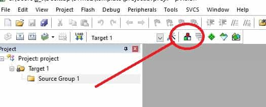
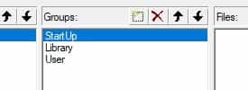
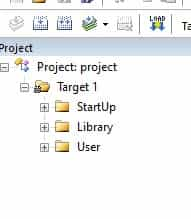
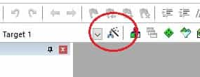
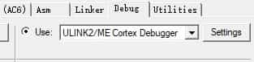

配置 Keil MDK 开发环境
软件和资源包的准备
MDK的安装和注册参考这里，注意，只需要进行到 Step 9 就可以了。
MDK安装完成后，安装STM32F401CCU6的资源包，进入Keil MDK5 官网，找到 STM32F4 Series ，点击右侧下载，下载完成后双击即可开始安装。
还需要下载 ST 官方提供的标准库，找到最下面的获取。下载完成后解压，里面的文件在下面配置模板工程会用到。
ST 官网下载需要填写正确的邮箱，在邮箱中的链接中下载。
配置模板工程
建立新的空工程
打开 MDK，点击Project -> new uVision Project...，选择一个放置工程文件的位置，这里新建文件夹，命名为 template ，打开这个文件夹，在下方文件名输入 project，点击保存。
在弹出的窗口选择 STMicroelectrons -> STM32F4 Series -> STM32F401 -> STM32F401CC -> STM32F401CCUx，点击 OK 。
弹出的窗口点击 Cancel。
空工程建立完成。
向空工程中添加必要的启动文件
在项目文件夹中新建文件夹StartUp。
将\Libraries\CMSIS\Device\ST\STM32F4xx\Source\Templates\arm文件夹下的startup_stm32f401xx.s复制进StartUp文件夹。
将\Libraries\CMSIS\Device\ST\STM32F4xx\Include文件夹下的stm32f4xx.h和system_stm32f4xx.h复制到StartUp文件夹。
将\Libraries\CMSIS\Device\ST\STM32F4xx\Source\Templates文件夹下的system_stm32f4xx.c复制到StartUp文件夹。
将\Libraries\CMSIS\Include文件夹下的所有文件复制到StartUp文件夹。
到这一步，可以用直接操作寄存器的方式控制单片机。
向工程添加标准库文件
使用标准库进行开发，需要将标准库里的文件包含进入项目中。
在项目文件夹下新建文件夹Library。
将\Libraries\STM32F4xx_StdPeriph_Driver\inc文件夹下的所有文件复制到Library文件夹。
将\Libraries\STM32F4xx_StdPeriph_Driver\src文件夹下的所有文件复制到Library文件夹。
进入Library文件夹，删除stm32f4xx_fmc.h,stm32f4xx_fmc.cstm32f4xx_fsmc.hstm32f4xx_fsmc.c这四个文件。
这一步我们添加了所有库函数进入工程，实际开发过程中选择使用到的库就可以了。
在项目文件夹下新建文件夹User。
将\Project\STM32F4xx_StdPeriph_Templates文件夹下的stm32f4xx_conf.h stm32f4xx_it.cstm32f4xx_it.h三个文件复制到User文件夹。
配置工程
打开 MDK，点击左上角这个图标

在第二列Groups中，双击组更改组名，改为StartUp。
点击Groups后面的第一个按钮，新建组。新建两个组，名称分别为Library和User。
完成之后应该和下面相同。

点击选择组StartUp，点击第三列下面的Add Files...，将项目文件夹下的StartUp文件夹下的所有 文件添加进来。
如果没有显示全部文件，或者根本没有文件，点击下方文件类型下拉菜单，选择All Files(*.*)。
其余两个组做同样处理，将同名文件夹下的所有文件添加进来。
最后点击 OK，关闭窗口，此时左侧边栏出现三个组。

点击左上角的魔术棒按钮

右侧ARM Compiler选择Use default compiler version 5。
点击上方C/C++，在Define一栏输入USE_STDPERIPH_DRIVER,STM32F401xx，在下面的Include Paths右侧，点击，打开窗口。
在弹窗的右上方，点击添加，点击新弹出的输入框的右侧点，选择StartUp，点击选择文件夹 。
用相同的方式将Library和User文件夹添加进来。
点击上方Debug，在下图位置切换烧录器。

选择好烧录器之后，点击右侧Settings，在弹窗上方Flash Download，将Reset and Run选项打勾。点击 OK 关闭窗口。
点击右上方的小扳手按钮，在Encoding选项里，选择UTF-8，左下角Tab size设为4，点击 OK 。
在User组上右键，选择Add New Item to Group，选择C File (.c)，输入文件名main，位置选择User文件夹，点击Add。
右键编辑器空白处，选择Insert'#include file' -> stm32f4xx.h。
打开User组里面的stm32f4xx_it.c，删除
#include "main.h"
void SysTick_Handler(void)
{
TimingDelay_Decrement();
}
打开User组里面的stm32f4xx_it.h，删除
void SysTick_Handler(void);